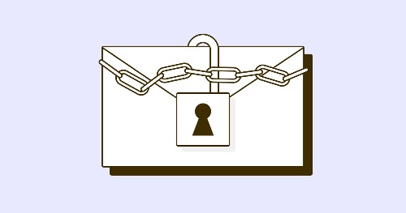

DMARC Report: How To Stop Spammers From Sending Email Messages To You
Very good question. DMARC is the community email standard and protocol that is designed to stop email spam. Because DMARC is widely implemented, it cuts off a lot of email traffic. However, this makes it difficult to deliver legitimate email.
We chose to follow up our conversation about the DMARC Record, Policy, and Report with this post on getting credibility.
DMARC: Reliant on SPF and DKIM
DMARC ensures that you take any suspicious emails, but it has its downsides linked to SPF and DKIM.
SPF mandates that the SMTP server must have a restraining order against the source address from the sender's domain in the header. This also means messages that are relayed through a proxy server are prevented by SPF. When you use server-based forwarding, the same point stands.

Another important situation to keep in mind are bounce messages. Bounce messages include empty envelopes, and SPF asserts that the HELO EHLO identity should be used in such instances. This is rarely implemented by SPF validations, nor is the SPF identity precisely specified by MTAs. As companies grow, they should maintain SPF TXT records; these should be updated as departments can send emails on behalf of other departments. The SPF 10 DNS lookup limit on TXT should be respected, but sometimes isn't. Falling below this limit can disrupt your DMARC's toleration profile.
DMARC and DKIM
DMARC accounts for these scenarios of SPF failure, by requiring that DKIM also be created. A public key can be validated throughout the lifetime of the email as it hops from server to server. However, DKIM is known to be fragile, as it requires that MTAs must not change the message that's used to create the signature. Only lately did I encounter an antivirus tool that enables the alteration of the message headers breaking DKIM. MTAs that append footers or alter links in messages are likely to break DKIM if messages are only related to them.
Mailing lists often edit the subject of the email and add comments to the message's body. However, really good email lists customize the content of the message, create a custom email signature, and begin the message using the lists domain. Regrettably, the domain lists will not match the Headers of the domain. The most practical approach to decreasing the problem is whitelisting the mailing list server, despite various suggestions on the matter.
DMARC, DKIM and SPF Alignment
DMARC currently anticipates an SPF alignment if SPF setup is to take place. SPF however has several cloud return states that if encountered with only SPF, lead to a failure message passing. For example, the CacheError is returned if the time spent establishing associations with the cloud storage breakthrough exceeds the expected time of a half second. An SPF failure is described as a TempError, so if the DMARC part also fails, it will not evaluate DMARC for a legitimate message.
Although there are other forms of banking fraud now, today, the most common one involves simply spoofing the store's name in the server header. Simply editing the name from here may suffice as a header. Mail clients resemble Outlook, so they provide a friendly display name to display the end user.
Although DMARC checks the domain in a header from the email address, the display name is overlooked. This sounds particularly confusing when you're viewing and replying to emails on a phone. Many of the time, you only see the display name on the phone, not the email address.
Notice the major differences in lines 11 and 12. Instead of using the Reply-To field like in the previous example, in this example, line 11 itself contains the address that Loki expects Njord to reply to. However, in this case, Loki has set up a valid DMARC record so that Loki's message can pass DMARC. Loki is counting on Loki thinking he is Odin based solely on the display name (Odin Borson CEO) in line 11. On mobile phones this is something really annoying, as normally one must click on the details to see meta-data to access an email. A spellchecker like the one here loads SPF, DKIM and DMARC as Loki owns midgard.com and accordingly sets them up.
In summary, DMARC's lack of implementation as a true solution is one thing, but claiming that DMARC is "hands down the best email authentication technique out there" is quite another. DMARC is complex, difficult to implement, and fails to take full account of the domain.